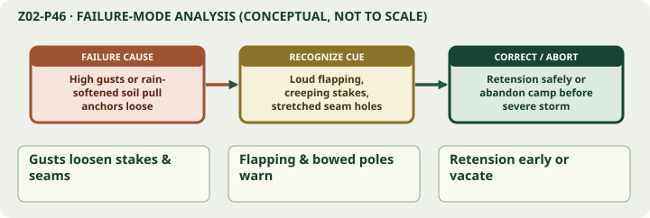

Z02-P46 · Shelter and housing · Adapted historical material
Recognize stake pullout, guyline slack and seam stress in high wind
Detect progressive shelter anchor failure during rising winds before sudden fabric tearing or structural collapse.
When it applies · Occupied tents and tarps exposed to gusty fronts, lake winds or thunderstorm outflow.
Equipment · Spare stakes, repair cordage, headlamp and pre-identified substantial refuge or bailout plan.

Actions
- Watch and listen for flapping panels, rhythmic pole slapping, creeping ground stakes, elongated needle holes along seams and slackening guylines as gusts increase.[E16, E20, ED]
- Re-tension guylines, add secondary anchors or lower windward tarp edges ONLY while conditions outside remain safe and clear of falling limbs.[E16, E13, E20]
- Reassess surrounding trees immediately whenever wind picks up—sound shelters cannot protect occupants from falling trunks or snapped overhead branches.[E13, E16]
Failure recognition · Ignoring loud rainfly flapping and pulled windward stakes until a gust shreds the fly and bends the main pole at 2 a.m.[E16, E20]
Verify · Confirm all windward stakes remain seated, guylines hold steady tension and surrounding timber shows zero active limb failure.[E16, E13, ED]
Stop or change course · Vacate tents and forested campsites immediately if wind gusts bend poles severely, stakes pull out repeatedly, branches snap or a High Wind/Severe Thunderstorm Warning takes effect.[E16, E13, E18]
Evidence and editorial notes
- E13 · USDA Forest Service · Hazard Tree Safety (agency PDF)
- Section: What You Can Do to Reduce Risk · Conditions: Forest campsites and stops
Support: Look for dead trees and falling material. Stay away from hazardous trees and move away when winds make the site unsafe.
Limitations: Internal decay and root rot can cause live-looking trees to fail in saturated soils or high wind. · Conflicting evidence: Does not specify a universal exclusion radius; tree height and slope govern fall reach.
Editorial note: Prevents false precision on fall-zone distance while requiring overhead screening. · Specialist reviewer: Land management and arboriculture safety
Primary source · checked 2026-11-24 - E16 · NWS · Wind Safety (current web edition)
- Section: Wind Safety > High Wind Hazards · Conditions: Forecast or developing high winds, squalls, or straight-line winds
Support: High winds topple trees, loft debris, and stress lightweight shelters beyond fabric and anchor limits; relocate out of timbered fall zones and into substantial shelter before gusts peak.
Limitations: Tents and tarps lack standardized wind-speed survival guarantees across soil types and pitch angles. · Conflicting evidence: None; avoids unvalidated mph ratings for improvised pitches.
Editorial note: Drives high-wind shelter inspection, guying limits, and abandonment thresholds. · Specialist reviewer: Weather safety and shelter equipment
Primary source · checked 2026-11-24 - E18 · NWS · Thunderstorm Safety (current web edition)
- Section: Thunderstorm Safety > Hail, Downbursts, and Flooding · Conditions: Approaching severe thunderstorm with hail, outflow gusts, or heavy rain
Support: Outflow gusts, hail, lightning, and flash runoff can strike before rain arrives at camp; break exposed ridge travel early and secure or vacate lightweight shelters.
Limitations: Storm cells can intensify faster than backcountry foot travel can clear exposed terrain. · Conflicting evidence: None; integrates with E04 and E07.
Editorial note: Connects storm-structure warning cues to early shelter selection. · Specialist reviewer: Weather safety and emergency management
Primary source · checked 2026-11-24 - E20 · NPS · Camping: What to Bring (current web edition)
- Section: Camping: What to Bring > Shelter and Sleep System · Conditions: Overnight camping across three-season and cool conditions
Support: Match tent/tarp, groundsheet, sleeping pad, and sleeping bag ratings to expected night lows and precipitation; test pitching and inspect poles, zippers, and stakes before departure.
Limitations: Manufacturer comfort ratings assume dry insulation, ground pad use, and adequate caloric intake. · Conflicting evidence: None; reinforces pre-trip inspection and dry-sleep separation.
Editorial note: Anchors manufactured shelter selection, groundsheet fit, and gear readiness. · Specialist reviewer: Shelter equipment and field education
Primary source · checked 2026-11-24
Source lineage · NWS wind safety and B012 P18; new manuscript · Classification · Adapted historical material.